산업안전산업기사 (2009-07-26 기출문제)
1과목: 산업안전관리론
1. 다음 중 OJT(On the Job Training) 교육에 대한 설명으로 적절하지 않는 것은?
- 직장의 실정에 맞게 실제적 훈련이 가능하다.
- 훈련효과에 의한 상호 신뢰이해도가 높아진다.
- 훈련에 필요한 업무의 계속성이 끊어지지 않는다.
- 다수의 근로자들에게 조직적 훈련이 가능하다.
(정답률: 77%)

2. A 사업장에서 발생한 990회의 사고 중 사망재해가 3건이었다면 하인리히의 재해구성비율에 따를 경우 경상은 몇 건 정도가 예상되겠는가?
- 60건
- 87건
- 120건
- 330건
(정답률: 77%)
3. 다음 중 인지(認知)과정에서 생길 수 있는 착오의 원인으로 볼 수 없는 것은?
- 심리적 능력한계
- 감각차단 현상
- 자기기술 과신
- 정보량의 저장한계
(정답률: 66%)
4. 다음 중 인적(人的) 안전대책과 가장 거리가 먼 것은?
- 안전관리 체제의 확립
- 안전관리 표준의 작성
- 설계 단계에서부터의 안전화
- 안전교육 훈련의 실시
(정답률: 74%)
5. 토의법 중에서 참가자에게 일정한 역할을 주어서 실제적으로 연기를 시켜봄으로써 자기의 역할을 보다 확실히 인식시키는 방법에 해당하는 것은?
- 포럼(forum)
- 심포지엄(symposium)
- 버즈 세션(buzz session)
- 롤 플레잉(role playing)
(정답률: 76%)
6. 파브로브(pavlov)의 조건반사설에 의한 학습이론의 원리에 해당되지 않는 것은?
- 일관성의 원리
- 시간의 원리
- 강도의 원리
- 준비성의 원리
(정답률: 62%)
7. 안전인증 방독마스크에서 할로겐용 정화통 외부 측면의 표시 색으로 옳은 것은?
- 갈색
- 회색
- 녹색
- 노랑색
(정답률: 64%)
8. 다음 중 산업안전보건법상 사업내 안전·보건교육에 있어 채용시의 교육내용으로 옳은 것은? (단, 기타 안전 · 보건관리에 필요한 사항은 제외한다.)
- 기계 · 기구의 위험성과 안전작업방법에 관한 사항
- 표준안전작업방법에 관한 사항
- 안전보건표지에 관한 사항
- 직업성 질환 예방에 관한 사항
(정답률: 53%)
9. 다음 중 안전모에 있어 착장체의 구성요소에 해당되지 않는 것은?
- 턱끈
- 머리고정대
- 머리받침고리
- 머리받침끈
(정답률: 66%)
10. 산업안전보건법에 따라 안전 · 보건표지에 사용된 색책의 색도기준이 ‘2.5Y 8/12' 일 때 이 색채의 명도 값으로 옳은 것은?
- 2.5
- 8
- 12
- 8/12
(정답률: 64%)
11. 다음 중 재해예방의 4원칙에 해당되지 않는 것은?
- 사실 보존의 원칙
- 원인 연계의 원칙
- 손실 우연의 원칙
- 예방 가능의 원칙
(정답률: 79%)
12. 안전교육 과정 중 피교육자가 스스로 행함으로서만 얻어지는 교육은?
- 안전지식의 교육
- 안전기능의 교육
- 안전태도의 교육
- 안전의식의 교육
(정답률: 32%)
13. 다음 중 허츠버그(Herzberg)의 동기 및 위생요인에 대한 설명으로 옳은 것은?
- 위생요인으로 직무의 내용이 해당된다.
- 위생요인으로 직무의 환경이 해당된다.
- 동기요인으로 대인 관계가 해당된다.
- 동기요인으로 작업 조건이 해당된다.
(정답률: 63%)
14. 인간의 행동 특성에 관한 다음의 레윈(Lewin)의 법칙에서 각 인자에 대한 내용이 잘못 짝지어진 것은?
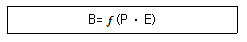
- B : 행동
- ⨍ : 함수관계
- P : 개체
- E : 기술
(정답률: 85%)
15. 상시근로자가 100명인 사업장에서 3개월 동안 재해 발생 건수가 5건, 불안전한 행동의 발견조치 건수가 10건, 안전홍보 건수가 5건, 불안전한 상태의 지적이 20건이고, 안전회의가 3건 있었다. 이 사업장의 안전활동율은 약 얼마인가? (단, 근로자는 1일 8시간씩 월 25일을 근무하였다.)(오류 신고가 접수된 문제입니다. 반드시 정답과 해설을 확인하시기 바랍니다.)
- 0.63
- 0.72
- 633.33
- 716.67
(정답률: 37%)
16. 다음 중 상해의 종류별 분류에 해당하지 않는 것은?
- 골절
- 중독
- 동상
- 산소결핍
(정답률: 66%)
17. 다음 중 안전 · 보건표지에 있어 문자 및 빨간색 또는 노란색에 대한 보조색으로 사용되는 색채는?
- 녹색
- 흰색
- 검정색
- 파란색
(정답률: 72%)
18. 다음 중 무재해 운동의 기본이념 3가지에 해당하지 않는 것은?
- 무의 원칙
- 참가의 원칙
- 자주 활동의 원칙
- 선취 해결의 원칙
(정답률: 79%)
19. 다음 중 매슬로우(Maslow)의 욕구위계이론 5단계를 올바르게 나열한 것은?
- 생리적 욕구 → 안전의 욕구 → 사회적 욕구 → 존경의 욕구 → 자아 실현의 욕구
- 생리적 욕구 → 안전의 욕구 → 사회적 욕구 → 자아 실현의 욕구→ 존경의 욕구
- 안전의 욕구 → 생리적 욕구 → 사회적 욕구 → 자아 실현의 욕구 → 존경의 욕구
- 안전의 욕구 → 생리적 욕구 → 사회적 욕구 → 존경의 욕구 → 자아 실현의 욕구
(정답률: 86%)
20. 산업안전보건법상 안전검사대상 유해 · 위험기계에 해당 하지 않는 것은?
- 프레스
- 리프트
- 전기 용접기
- 산업용 원심기
(정답률: 63%)
2과목: 인간공학 및 시스템안전공학
21. 화학설비에 대한 안전성 평가를 위해 준비해야 하는 관계자료와 가장 거리가 먼 것은?
- 운전요령
- 임금현황
- 공정계통도
- 화학설비배치도
(정답률: 85%)
22. 인간이 청각으로 느끼는 소리의 크기를 측정하는 2가지 척도롤 손(sone)과 폰(phon)이 있다. 다음 중 40phon 은 몇 sone 에 해당하는가?
- 1
- 2
- 4
- 8
(정답률: 62%)
23. 다음 설명에 해당하는 설비 보전 방식은?
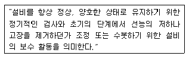
- 예방보전(preventive maintenance)
- 보전예방(maintenance prevention)
- 개량보전(corrective maintenance)
- 사후보전(Break-down maintenance)
(정답률: 76%)
24. 사람 눈의 굴절률을 나타내는 디옵터(dioptor)를 구하는 식으로 옳은 것은?
- 1/cm 단위의 초점거리
- 1/inch 단위의 초점거리
- 1/feet 단위의 초점거리
- 1/m 단위의 초점거리
(정답률: 39%)
25. 1cd 의 점광원에서 1m 떨어진 곳에서의 조도가 2 lux이었다. 동일한 조건에서 3m 떨어진 곳에서의 조도는 약 몇 lux 인가?
- 0.11
- 0.22
- 0.33
- 0.67
(정답률: 60%)
26. 다음 중 소음에 의한 청력손실이 가장 크게 나타나는 주파수대는?
- 2000㎐
- 4000㎐
- 10000㎐
- 20000㎐
(정답률: 74%)
27. 다음 중 인간-기계 체계의 기본 기능이 아닌 것은?
- 감지
- 정보 보관
- 궤환
- 행동
(정답률: 77%)
28. 그림과 같은 시스템에서 펌프 A 의 신뢰도는 0.999, 밸브 B와 C 의 신뢰도가 모두 0.99 일 경우 전체의 신뢰도는 얼마인가?
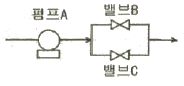
- 0.9810909
- 0.9820101
- 0.9867204
- 0.9989001
(정답률: 69%)
29. 결함수분석법(FTA)에서 특정 조합의 기본사상들이 모두 발생하였을 때 정상사상을 일으키는 기본사상의 집합을 무엇이라고 하는가?
- 패스 셋(path set)
- 컷 셋(cut set)
- 최소 패스 셋(minimal path set)
- 최소 컷 셋(minimal cut set)
(정답률: 63%)
30. 다음 중에서 육체적 활동에 대한 생리학적 측정방법으로 가장 거리가 먼 것은?
- 심박수
- EMG
- EEG
- 에너지소비량
(정답률: 59%)
31. 화학설비에 대한 안전성 평가 5단계 중 제4단계인 안전대책의 세부사항으로 적절하지 않은 것은?
- 보전
- 평가계획
- 관리적 대책
- 설비 등에 관한 대책
(정답률: 59%)
32. 공정도(process chart)에 사용되는 기호 중 원재료, 부품 또는 제품 등의 검사를 의미하는 기호는?
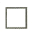
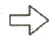
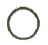
(정답률: 49%)
33. 다음 중 부품 배치의 4원칙으로 틀린 것은?
- 중요성의 원칙
- 사용빈도의 원칙
- 사용방법의 원칙
- 기능별 배치의 원칙
(정답률: 77%)
34. 다음 중 FT도에 사용되는 기호의 명칭으로 옳은 것은?
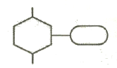
- 억제 게이트
- 부정게이트
- 배타적 OR 게이트
- 우선적 AND 게이트
(정답률: 51%)
35. 인간-기계 시스템(Man-Machine system)에서 인간과 기계에 록 시스템(Lock system)을 설치할 때 다음 설명 중 옳은 것은?
- 기계와 인간의 사이에는 인트라록 시스템(Intra lock system)을 둔다.
- 인터록 시스템(Inter lock system)과 인트라룩 시스템(Intra lock system)사이에는 트랜스록 시스템(Trans lock system)을 둔다.
- 트랜스록 시스템(Trans lock system)과 인터록 시스템(Inter lock system) 사이에는 인트라록 시스템(Intra lock system)을 둔다.
- 트랜스록 시스템(Trans lock system)과 인트라룩 시스템(Intra lock system) 사이에는 인터록 시스템(Inter lock system)을 둔다.
(정답률: 54%)
36. 인간과 기계가 주고받는 정보교환에 있어서 N 개 대안이 있을 경우 각 대안의 실현 확률을 p라고 할 때 정보량(H)을 구하는 식으로 옳은 것은?
- H=logpN
- H=logNp
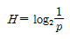
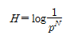
(정답률: 60%)
37. 다음 중 인간의 실수와 그것으로 인해 생길 수 있는 위험을 정량적으로 평가하는 기법은?
- PHA
- MORT
- THERP
- FMECA
(정답률: 80%)
38. 다음 중 인체 측정에 관한 설명으로 틀린 것은?
- 기능적 인체 치수는 움직이는 몸의 자세로부터 측정하는 것이다.
- 일반적으로 인체의 치수측정은 구조적 치수, 기능적 치수로 대변할 수 있다.
- 구조적 인체 치수는 표준 자세에서 움직이지 않는 상태를 측정하는 것이다.
- 마틴식 인체계측기를 활용하며 간소복 차림의 상태에서 측정하는 것을 원칙으로 한다.
(정답률: 56%)
39. 정보를 전송하기 위해 표시장치를 선택하고자 할 때 시각장치보다 청각 장치를 사용하는 것이 효과적인 경우로 옳은 것은?
- 정보의 내용이 복잡한 경우
- 정보의 내용이 후에 재참조되는 경우
- 수신자가 한 곳에 머물러 있는 경우
- 정보의 내용이 즉각적인 행동을 요구하는 경우
(정답률: 83%)
40. 크기를 이용한 조종 장치에서 촉감에 의하여 크기 차이를 정확히 구별할 수 있는 직경과 두께의 최소 차이 값으로 가장 적절한 것은?
- 직경 : 1.3㎝, 두께 : 0.95㎝
- 직경 : 2.5㎝, 두께 : 1.95㎝
- 직경 : 3.2㎝, 두께 : 1.95㎝
- 직경 : 4.5㎝, 두께 : 0.95㎝
(정답률: 60%)
3과목: 기계위험방지기술
41. 탁상용 연삭기의 방호장치를 그림과 같이 설치할 때 각도 a와 간격 b로 가장 옳은 것은?
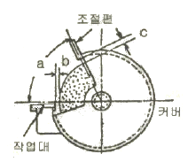
- a : 65° 이내, b : 3mm 이내
- a : 60° 이내, b : 3mm 이내
- a : 90° 이내, b : 5mm 이내
- a : 65° 이내, b : 5mm 이내
(정답률: 62%)
42. 연삭숫돌 사용 시 기계에 이상이 있는지 여부를 확인하기 위한 시운전시간으로 가장 적절한 것은?
- 작업시작 전 3분 이상, 연삭숫돌 교체 후 3분 이상
- 작업시작 전 30초 이상, 연삭숫돌 교체 후 1분 이상
- 작업시작 전 1분 이상, 연삭숫돌 교체 후 3분 이상
- 작업시작 전 1분 이상, 연삭숫돌 교체 후 1분 이상
(정답률: 83%)
43. 보일러 방호장치 설치 방법을 설명한 것이다. 옳지 않은 것은?
- 압력방출장치는 검사가 용이한 위치에 밸브축이 수평되게 설치한다.
- 압력방출장치는 가능한 보일러 동체에 직접 설치한다.
- 압력제한스위치는 보일러의 압력계가 설치된 배관상에 설치한다.
- 압력방출장치는 최고사용압력이하에서 작동하는 방호장치를 설치해야 한다.
(정답률: 56%)
44. 선반 등으로부터 돌출하여 회전하고 있는 가공물이 근로자에게 위험을 미칠 우려가 있는 때에 설치할 방호장치로 가장 적합한 것은?
- 슬리브
- 건널다리
- 방책
- 덮개 또는 울
(정답률: 82%)
45. 인력운반 작업 시 안전수칙 중 잘못된 것은?
- 물건을 들어 올릴 때는 팔과 무릎을 사용하고 허리를 구부린다.
- 운반 대상물의 특성에 따라 필요한 보호구를 확인, 착용한다.
- 화물에 가능한 한 접근하여 화물의 무게중심을 몸에 가까이 밀착시킨다.
- 무거운 물건은 공동 작업으로 하고 보조기구를 이용한다.
(정답률: 83%)
46. 크레인 작업 시 3ton의 중량을 걸어 10 m/s2의 가속도로 감아올릴 때 로프에 걸리는 총 하중은 약 몇 Kgf 인가?
- 3000
- 4⑤2
- 6061
- 8459
(정답률: 51%)
47. 개구부에서 위험점까지의 최단거리가 60mm 위치에 롤러가 회전하고 있다. 개구부 간격의 허용한계는 몇 mm 인가? (단, 위험점이 전동체는 아니다.)
- 10
- 12
- 13
- 15
(정답률: 67%)
48. 선반의 안전장치가 아닌 것은?
- 칩 브레이크
- 급브레이크
- 칩비산방지 투명판
- 안전블록
(정답률: 69%)
49. 목재가공용 기계의 방호장치로 관련이 적은 것은?
- 덮개
- 반발예방장치
- 톱날접촉예방장치
- 과부하방지장치
(정답률: 73%)
50. 연삭기 숫돌의 파괴원인으로 볼 수 없는 것은?
- 숫돌의 회전속도가 너무 빠를 때
- 숫돌자체에 균열이 있을 때
- 숫돌의 정면을 사용할 때
- 숫돌에 과대한 충격을 주게 되는 때
(정답률: 81%)
51. 한계하중 이하의 하중이라도 고온조건에서 일정 하중을 지속적으로 가하면 시간의 경과에 따라 변형이 증가하고 결국은 파괴에 이르게 되는 현상은?
- 크리프
- 피로현상
- 응력 집중
- 가공 경화
(정답률: 57%)
52. 지게차의 헤드가드가 갖추어야 할 조건의 설명으로 틀린 것은?
- 헤드가드의 강도는 지게차의 최대하중의 2배가 되는 등분포하중에 견딜 수 있을 것.(지게차의 하중이 4ton을 넘을 경우 4ton으로 함)
- 상부틀의 각 개구의 폭 또는 길이가 20 ㎝ 미만일 것
- 운전자가 앉아서 조작하는 방식의 지게차는 운전자 좌석의 상면에서 헤드가드의 상부틀의 하면까지의 높이가 1 m이상 일 것
- 운전자가 서서 조작하는 지게차는 운전석의 바닥면에서 헤드가드의 상부틀의 하면까지의 높이가 2m이상 일 것
(정답률: 75%)
53. 허용응력과 안전율(>1)의 관계를 올바르게 표현한 것은? (단, 기초강도는 사용조건 및 하중의 종류에 따라 극한 강도, 항복점, 크리프강도, 피로한도 등을 적용한다.)
- 허용응력 = 기초강도 × 안전율
- 허용응력 = 안전율 / 기초강도
- 허용응력 = 기초강도 / 안전율
- 허용응력 = (안전율 × 기초강도)/2
(정답률: 63%)
54. 다음 중 산업용 로봇에의 교시작업을 개시하기 전에 점검하여야 할 사항으로 거리가 먼 것은?
- 비상정지장치의 기능 상태
- 외부 전선의 피복 손상 유무
- 매니플레이터 작동의 이상 유무
- 비정상적인 소음 및 진동의 유무
(정답률: 63%)
55. 보일러의 안전한 가동을 위하여 압력방출장치를 2개 설치한 경우에 작동 방법으로 옳은 것은?
- 최고의 사용압력 이상에서 2개 동시작동
- 최고의 사용압력 이하에서 2개 동시작동
- 최고의 사용압력 이하에서 1개가 작동되고 다른 것은 최고 사용압력 1.⑤배 이하에서 작동
- 최고의 사용압력 이하에서 1개가 작동되고 다른 것은 최고 사용압력 1.1배 이하에서 작동
(정답률: 81%)
56. 용접 토치 팁의 청소는 무엇으로 해야 가장 좋은가?
- 놋쇠선
- 철선
- 전선케이블
- 팁 클리너
(정답률: 87%)
57. 기계설비기구의 위험점에서 고정부분과 회전부분이 만드는 위험점이 아니고, 밀링커터, 둥근 톱의 톱날 등과 같이 회전하는 운동부 자제의 위험이나 운동하는 기계부분자체의 위험성에서 초래되는 위험점은?
- 물림점
- 절단점
- 끼임점
- 협착점
(정답률: 64%)
58. 무부하상태 기준으로 구내 최고속도가 20km/h인 지게차의 주행시 좌우 안정도 기준은 몇% 이내인가?
- 37%
- 39%
- 18%
- 4%
(정답률: 72%)
59. 제철공장에서는 주괴(ingot)를 운반하는 데 주로 컨베이어를 사용하고 있다. 컨베이어에 대한 방호조치로 틀린 것은?
- 근로자의 신체의 일부가 말려드는 등 근로자에게 위험을 미칠 우려가 있는 때 및 비상시에는 즉시 컨베이어 등의 운전을 정지시킬 수 있는 장치를 설치하여야 한다.
- 화물의 낙하로 인하여 근로자에게 위험을 미칠 우려가 있는 때에는 당해 컨베이어 등에 덮개 또는 울을 설치하는 등 낙하방지를 위한 조치를 하여야 한다.
- 수평상태로만 사용하는 컨베이어의 경우 정전, 전압 강하 등에 의한 화물 또는 운반구의 이탈 및 역주행을 방지하는 장치를 갖추어야 한다.
- 운전 중인 컨베이어 등의 위로 근로자를 넘어가도록 하는 때에는 근로자의 위험을 방지하기 위하여 건널다리를 설치하는 등 필요한 조치를 하여야 한다.
(정답률: 60%)
60. 종이, 천, 금속박 등을 통과시키는 로울러기로서 근로자에게 위험을 미칠 우려가 있는 부위에 설치해야 할 방호장치에 해당하는 것은?
- 방호판
- 안내 로울러
- 과부하방지장치
- 반발예방장치
(정답률: 42%)
4과목: 전기 및 화학설비위험방지기술
61. 화학공정에서 반응을 시키기 위한 조작 조건에 해당되지 않는 것은?
- 반응 온도
- 반응 농도
- 반응 높이
- 반응 압력
(정답률: 77%)
62. 인체가 현저히 젖어있는 상태이거나 금속성의 전기·기계 장치의 구조물에 인체의 일부가 상시 접촉되어 있는 상태에서의 허용접촉전압으로 옳은 것은?
- 2.5V 이하
- 25V 이하
- 50V 이하
- 75V 이하
(정답률: 71%)
63. 다음 가스 중 위험도가 가장 큰 것은?
- 수소
- 아세틸렌
- 프로판
- 암모니아
(정답률: 73%)
64. 다음 중 고압활선작업에 필요한 보호구에 해당하지 않는 것은?
- 절연대
- 절연장갑
- AE형 안전모
- 절연장화
(정답률: 75%)
65. 헥산 5vol%, 메탄 4vol%, 에틸렌 1vol% 로 구성된 혼합가스의 연소하한값은 약 얼마인가? (단, 각 가스의 공기 중 연소하한값으로 헥산은 1.1vol%, 메탄은 5vol%, 에틸렌은 2.7vol% 이다.)
- 0.58
- 1.75
- 2.72
- 3.72
(정답률: 58%)
66. 대기 중에 대량의 가연성 가스가 유출되거나 대량의 가연성 액체가 유출하여 그것으로부터 발생하는 증기가 공기와 혼합해서 가연성 혼합기체를 형성하고, 점화원에 의하여 발생하는 폭발을 무엇이라 하는가?
- UVCE
- BLEVE
- Detonation
- Boil over
(정답률: 62%)
67. 전기기기 절연물의 종별 중 최고 허용온도가 가장 높은 절연계급은?
- Y종
- A종
- F종
- C종
(정답률: 44%)
68. 다음 중 가연성 분진의 폭발 메커니즘으로 옳은 것은?
- 퇴적분진 → 비산 → 분산 → 발화원 발생 → 폭발
- 발화원 발생 → 퇴적분진 → 비산 → 분산 → 폭발
- 퇴적분진 → 발화원 발생 → 분산 → 비산 → 폭발
- 발화원 발생 → 비산 → 분산 → 퇴적분진 → 폭발
(정답률: 67%)
69. 프로판(C3H8) 1몰이 완전연소하기 위한 산소의 화학양론 계수는 얼마인가?
- 2
- 3
- 4
- 5
(정답률: 42%)
70. 저압전로에서 그 전로에 지락이 생겼을 경우에 0.5초 이내에 자동적으로 전로를 차단하는 장치를 시설하는 경우 제3종 접지공사와 특별 제3종 접지 공사의 저항치는 자동차단기의 정격감도 전류에 따라 달라지는데 정격감도 전류가 30mA 일 경우 접지저항값으로 옳은 것은?(오류 신고가 접수된 문제입니다. 반드시 정답과 해설을 확인하시기 바랍니다.)
- 150Ω이하
- 300Ω이하
- 500Ω이하
- 1000Ω이하
(정답률: 27%)
71. 정전기 방전의 종류 중 부도체의 표면을 따라서 star-check 마크를 가지는 나뭇가지 형태의 발광을 수반하는 것은?
- 기중방전
- 연면방전
- 불꽃방전
- 고압방전
(정답률: 67%)
72. 다음 중 발화점에 대한 설명으로 옳은 것은?
- 점화원에 의해 불이 붙을 수 있는 최저 온도
- 점화원에 의해 불이 붙을 수 있는 최저 증기농도
- 주위의 열로 인하여 스스로 불이 붙을 수 있는 최저 증기농도
- 주위의 열로 인하여 스스로 불이 붙을 수 있는 최저 온도
(정답률: 57%)
73. 다음 중 산업안전보건법상 폭발성 물질에 해당하지 않는 것은?
- 하이드라진
- 아조화합물
- 유기과산화물
- 황인
(정답률: 50%)
74. 할론 소화기는 연소의 요소를 제거함으로서 소화작용을 하는가?
- 발화원
- 가연물
- 연쇄반응
- 탄화물
(정답률: 51%)
75. 다음 중 위험도가 가장 높은 통전경로는?
- 오른손 - 등
- 왼손 - 오른손
- 왼손 - 발
- 오른손 - 가슴
(정답률: 76%)
76. 다음 중 연소반응에 해당하지 않는 것은?
- C + O2→ CO2
- 2N2 + O2→ 2NO
- 2H2 + O2→ 2H2O
- C4H10 + 6.5O2→4CO2 + 5H2O
(정답률: 49%)
77. 방폭구조 전기기계·기구의 선정기준에 있어 가스폭발 위험장소의 제1종 장소에 사용할 수 없는 방폭구조는?
- 내압방폭구조
- 안전증방폭구조
- 본질안전방폭구조
- 비점화방폭구조
(정답률: 57%)
78. 전로의 사용전압과 전호의 전선 상호간 및 전로와 대지간의 절연저항이 잘못 연결된 것은?
- 사용전압이 110V 인 경우 0.1MΩ 이상
- 사용전압이 220V 인 경우 0.2MΩ 이상
- 사용전압이 440V 인 경우 0.3MΩ 이상
- 사용전압이 550V 인 경우 0.4MΩ 이상
(정답률: 69%)
79. 다음 중 정전기의 발생요인으로 적절하지 않은 것은?
- 도전성 재료에 의한 발생
- 박리에 의한 발생
- 유동에 의한 발생
- 마찰에 의한 발생
(정답률: 66%)
80. 다음 중 아세틸렌은 어느 물질에 용해시켜 보관하는가?
- 아세톤
- 벤젠
- 기름
- 물
(정답률: 52%)
5과목: 건설안전기술
81. 콘크리트 타설할 때 안전에 유의하여야 할 사항으로 옳지 않은 것은?
- 콘크리트를 치는 도중에는 거푸집, 지보공 등의 이상유무를 확인한다.
- 진동기 사용시 지나친 진동은 거푸집 도괴의 원인이 될 수 있으므로 적절히 사용해야 한다.
- 최상부의 슬래브는 되도록 이어붓기를 하고 여러번에 나누어 콘크리트를 타설한다.
- 타워에 연결되어 있는 슈트의 접속은 확실한지 확인한다.
(정답률: 80%)
82. 다음 공사규모에서 유해위험방지계획서를 제출해야 할 사업장은?
- 최대 지간길이가 40m이고 전체길이가 1,000m인 교량 공사
- 연면적 4,000m2인 종합병원 공사
- 연면적 3,000m2인 종교시설 공사
- 연면적 6,000m2인 지하도 상가 공사
(정답률: 66%)
83. 다음 중 흙의 동상방지 대책으로 옳지 않은 것은?
- 동결되지 않는 흙으로 치환한다.
- 지하수위를 낮춘다.
- 지하수위 상층에 세립층을 쌓는다.
- 지표의 흙을 화학약품처리하여 동결온도를 낮춘다.
(정답률: 57%)
84. 가설구조물 부재의 강성이 부족하여 가늘고 긴 부재가 압축력에 의하여 파괴되는 현상은?
- 좌굴
- 탄성변형
- 한계변형
- 휨변형
(정답률: 60%)
85. 히빙(heaving)현상은 주로 어떤 경우에 발생하는가?
- 흙을 다질 경우
- 모래 지반에 물이 침투할 경우
- 연약점토 지반을 굴착할 경우
- 건조 흙을 굴착할 경우
(정답률: 64%)
86. 다음 중 추락재해의 방지를 위해 설치하는 시설이라고 볼 수 없는 것은?
- 안전방망
- 안전난간
- 개구부 덮개
- 방호시트(sheet)
(정답률: 62%)
87. 콘크리트의 종류 중 수중공사에 주로 이용되며 거푸집 조립하고 골재를 미리 채운 후 특수한 모르타르를 그 사이에 주입하여 형성하는 콘크리트는?
- 프리팩콘크리트
- 한중콘크리트
- 경량콘크리트
- 섬유보강콘크리트
(정답률: 45%)
88. 구조물 해체 작업용 기계가구와 직접적으로 관계가 없는 것은?
- 대형브레이커
- 압쇄기
- 핸드브레이커
- 착암기
(정답률: 67%)
89. 추락에 의한 위험방지와 관련된 다음 내용 중 ( )에 알맞은 것은?
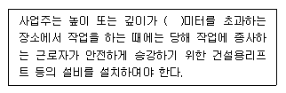
- 0.1
- 1.5
- 2.0
- 2.5
(정답률: 82%)
90. 항타기를 사용하는 경우에 도괴방지를 위해 준수하여야 하는 사항으로 옳지 않은 것은?
- 연약지반에 설치할 때는 각부의 침하를 방지하기 위하여 깔판·깔목 등을 사용할 것
- 버팀줄만으로 상단부분을 안정시키는 때에는 버팀줄을 2개로 하고 같은 간격으로 배치할 것
- 각부 또는 가대가 미끄러질 우려가 있는 때에는 말뚝 또는 쐐기를 사용하여 각부 또는 가대를 고정시킬 것
- 평형추를 사용하여 안정시키는 때에는 평형추의 이동을 방지하기 위하여 가대에 견고하게 부착시킬 것
(정답률: 57%)
91. 근로자의 추락 등에 의한 위험을 방지하기 위하여 안전난간을 설치할 때 준수하여야 할 기준으로 옳지 않은 것은?
- 안전난간은 임의의 점에서 임의의 방향으로 움직이는 100kg 이상의 하중에 견딜 수 있는 튼튼한 구조일 것
- 상부난간대는 경사로의 표면으로부터 90㎝ 이상 120㎝ 이하에서 설치할 것
- 난간기둥은 상부난간대와 중간난간대를 견고하게 떠 받칠 수 있도록 적정간격을 유지할 것
- 난간대는 지름 1.5㎝ 이상의 금속제 파이프나 그 이상의 강도를 가진 재료일 것
(정답률: 74%)
92. 말뚝박기 해머(hammer)중 연약지반에 적합하고 상대적으로 소음이 적은 것은?
- 드롭 해머(drop hammer)
- 디젤 해머(diesel hammer)
- 스팀 해머(steam hammer)
- 바이브로 해머(vibro hammer)
(정답률: 66%)
93. 해체작업을 수행하기 전에 해체계획에 포함되어야 하는 사항이 아닌 것은?
- 부재 손상·변형·부식 등에 관한 조사계획서
- 해체 작업용 기계·기구 등의 작업계획서
- 해체의 방법 및 해체 순서도면
- 해체작업용 화약류 등의 사용계획서
(정답률: 58%)
94. 다음 중 굴착면의기울기 기준으로 옳지 않은 것은?(2021년 11월 19일 개정된 규정 적용됨)
- 풍화암 - 1 : 1.0
- 연 암 - 1 : 1.0
- 경 암 - 1: 1.0
- 건지 - 1: 0.5 ~ 1 : 1
(정답률: 68%)
95. 아스팔트 포장도로의 파쇄굴착 또는 암석제거에 적절한 장비는?
- 스크레이퍼
- 로울러
- 리퍼
- 드래그라인
(정답률: 69%)
96. 콘크리트 타설시 거푸집의 측압에 영향을 미치는 인자들에 대한 설명으로 옳지 않은 것은?
- 슬럼프가 클수록 측압은 크다.
- 거푸집의 강성이 클수록 측압은 크다.
- 철근량이 많을수록 측압은 작다.
- 타설 속도가 느릴수록 측압은 크다.
(정답률: 67%)
97. 다음 중 건설업 산업안전보건관리비 계상 및 사용기준에서의 안전관리비 대상액을 의미하는 것은?
- 총공사금액
- 직접재료비와 간접노무의 합
- 간접인건비와 직접노무의 합
- 직·간접재료비와 직접노무비의 합
(정답률: 64%)
98. 차랑계 건설기계를 사용하여 작업을 할 때 작업계획에 포함되어야 할 사항이 아닌 것은?
- 사용하는 차량계 건설기계의 종류 및 능력
- 차량계 건설기계의 운행 경로
- 차량계 건설기계에 의한 작업방법
- 제동장치 및 조정장치 기능의 이상 유무
(정답률: 66%)
99. 와이어로프나 철선 등을 이용하여 상부지점에서 작업용발판을 매다는 형식의 비계로서 건물 외벽도장이나 청소 등의 작업에서 사용되는 비계는?
- 브라켓 비계
- 달비계
- 이동식 비계
- 말비계
(정답률: 72%)
100. 건설현장에서 근로자가 안전하게 통행할 수 있도록 통로에 설치하는 조명의 조도 기준은?
- 65 lux
- 75 lux
- 85 lux
- 95 lux
(정답률: 84%)